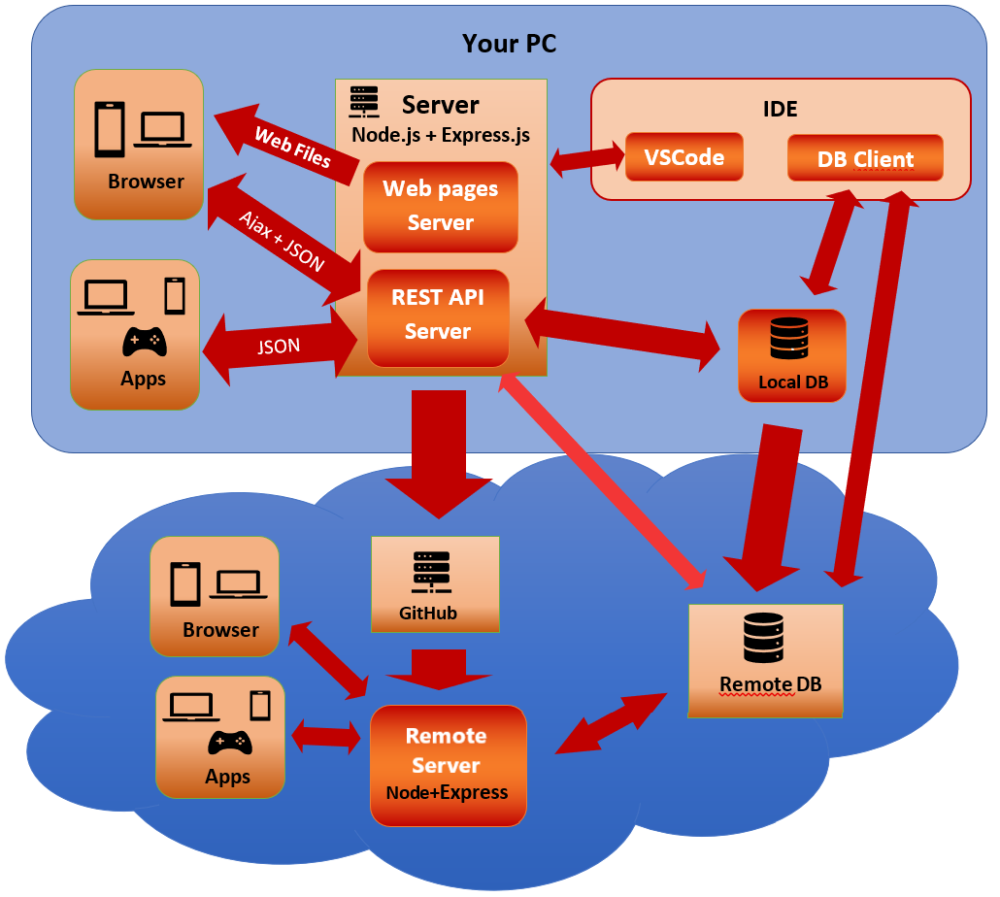
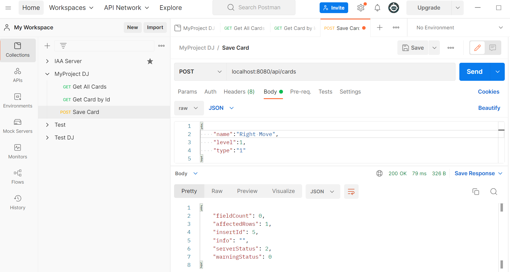

Objectives
- Understand the architecture of a restfull web application
- Installing node.js, express.js and other support modules
- Setting up localhost Node.js/Express.js application
Other objectives
- Setting up a database on a Node.js/Express.js application
- Using version control with git and github
- Setting up a online Node.js/Express.js application using Cyclic hosting
Index
1- The architecture of a restfull web application
The following image will try to summarize all the components of a web application, their relations, and the corresponding resources/concepts.

Click to tooggle the explanation of the image and of Web Applications concepts
-
At the top right you see two IDE (Integrated Development Environment) used to create code and manage databases:
-
Visual Studio Code Editor for code, including all things web ( HTML, CSS, Javascript, etc)
You can also get Notepad++:
- It is also an editor for any type of text file
- It is lighter and good for quick modifications
-
Database Client Application Applications to manage and develop databases, they will depend on the database used. Examples:
-
-
Bellow the IDEs, connected to the DB Client you see the databases. This constitutes the base of the three tiers that usually constitute a web application: Database | Server | Client .
For local server you can use a local or a remote database, but for an online server you will need a remote database, because it would be really hard to connect to the local server.
-
In the top middle you see a depiction of the Node.js/Express.js server. The server is divided in two parts:
- Web Pages Server Will serve HTML, CSS, Javascript and other files (ex: images) to the browser clients
-
REST API Server Will serve data requested by web pages on the browser (using AJAX and JSON) and could also serve data to other applications (using JSON).
Since the REST API is responsible to manage data, only this part of the server will communicate with the database.
-
In the top left side you see the client side:
-
Browser Browsers like chrome, safari or edge will need web pages composed by HTML, CSS, images, etc. All these files will be sent by the Web Pages Server.
Some of these pages will also need data. These pages will have javascripts that will request the data from the REST API Server (the one that can obtain data from the Database) and insert that data on the web pages
Some pages will also send data to the REST API also using javascript.
-
Apps Applications like mobile applications or desktop programs can also comunicate with the server.
Since applications will have their own interface they only need the data so they only connecto to the REST API Server.
-
-
In the bottom, inside the cloud, you have a depiction of the online web server. It replicates the same elements as the local web server: clients, Node.js/Express.js server and database (the online database). The Node.js/Express.js server is divided in the same way in Web Page Server and REST API Server.
To create an online server you need a provider. We give as example the Cyclic platform that suports Node.js servers and where you can easilly deploy applications from your public github repository.
The idea is simple:
- Create a local git repository that will allow us to manage versions and connect to a remote repository.
- Push the latest version to a remote git repository like GitHub.
- Connect your GitHub account with Cyclic and create an App that connects to a repository. After configuring this connection Cyclic will automatically deploy the latest version of the code each time the GitHub repository is updated.
You can see more details on how to deploy a Node Web Application on Cyclic on another section of this tutorial.
Other concepts and applications
-
Node.js and Express Allows for the creation of a server that will manage the requests and responses of web pages and other data. We will see this in more detail in this tutorial and following
Node.js Open source server environment (it is programmed in javascript)
Reference: https://nodejs.org/en/docs/guides/
Express.js Node.js web application framework (it is a Node.js module), used to create web applications more easily
References:
- Routing: https://expressjs.com/en/starter/basic-routing.html
- API Reference: https://expressjs.com/en/4x/api.html
-
HTML HypertText Modeling Language – Used to define the content of web pages
Reference: https://www.w3schools.com/html/ (w3schools is your "go to" resource for websites)
-
CSS Cascating Style Sheets – Used to describe the style (presentation) of the web pages
Reference: https://www.w3schools.com/css
-
Javascript Programming language for web development – Used to make calculations and modifications to and for your web pages
Reference: https://www.w3schools.com/js
-
REST REpresentational State Transfer (just a concept, nothing to install) - Defines a way to provide communication between computer systems. Applications that follow REST rules are called RESTfull Application
Reference: https://www.restapitutorial.com/lessons/whatisrest.html
How to document a rest application: https://bocoup.com/blog/documenting-your-api
-
AJAX Asynchronous JavaScript And XML (just a concept, nothing to install) - Allows the communication of web pages with the server and dynamically updating the page without reloading the whole page (much more convenient than the other option). We will not use XML we will use JSON
-
JSON JavaScript Object Notation (just a concept, nothing to install) – A syntax for storing and exchanging data – We will use it to send and receive data between web pages and server
-
Git Distributed version control system. Ables developer teams to manage several versions of code and colaboratively create applications. You can use it directly on a command line or using a client with a graphic interface.
-
GitHub It is a development platform – It is used to allow a community of developers to host and manage their code, including previous versions
Reference: https://github.com/
-
Cyclic It is a PaaS (platform as a service) – We can use it to host our website (needs GitHub to get the code to deploy)
Reference: https://www.cyclic.sh/
What do you need to have
- Install Node.js
-
Site: https://nodejs.org/en/
Choose the LTS version (recommended for most users). Download and install Node.js.
- Install Visual Studio Code (Web Editor)
-
Site: https://code.visualstudio.com/
When installing you have an option that will let you open a project folder directly from the explorer using right click (at least on windows).
Click to see an image of the VSCode instalation window

When you first open a Node project VSCode will detect that it is a Node project and ask if you want to install extensions to help you. You can accept those. You can also install other extensions if you find them usefull.
- Install git
-
Site: https://git-scm.com/downloads
The package will install the executables needed to run all git commands. ~ You can call them using the terminal or install a git client.
- Install Postman
-
Site: https://www.postman.com/downloads/
Although Postman is not needed to run the server, it is useful for testing. You can also use other programs for testing, including some VSCode extensions
- Create a Github account
-
Site: https://github.com/
Select "Sign Up" and enter your account information. You will need a valid email since when you first login you will receive a code on your email that you need to write to enter.
The first time you enter you will also be asked to create your first repository. Make it a public repository and give it a name (if you do not know what to call it, call it "myproject"). If you already have an account create a new public repository instead.
Create a README file when you create your repository (if you have not created you will always have an option to create it after). For now leave the README me as it is and click commit (you can change it later).
- Create a Cyclic account connected to your Github account
-
NOTE: You should only do this step after you created a basic Node.js/Express.js project. See the section about creating a server
Site: https://cyclic.sh/
Choose "Sign Up" and then "Continue with Github". If you are already logged to github you only need to authorize the connection, otherwise you will ask you to login to your Github.
You will then be asked to deploy your first App. We assume you already created your code on a github repository so you will need to choose the tab that says "Link Your Own".
Finally search for the repository name and click on it. Cyclic will retrieve all the information it needs from the Node.js configuration file (package.json).
Check the next sections to see more of the available settings.
You will need a database for your server. The database will not be a topic of this tutorial, only the connection to the database.
Use the database that is required for your project. Two examples of commonly used databases:
- MySql
Site: https://dev.mysql.com/downloads/workbench/
Should include MySql (database server) and Workbench (database client)
- PostgreSQL
Site: https://www.postgresql.org/download/
Should include PostgreSQL (database server) and Pdadmin (dataabase client)
You will need a remote database for your online server (server on Cyclic).
Use the remote database that is required for your project. Examples of free database hosting for the two databases mentioned before:
- MySql: Two options
Db4free: https://www.db4free.net/signup.php
RemoteMysql: https://remotemysql.com/login.php
- PostgreSQL
ElephantSQL: https://www.elephantsql.com/
Warning: On free database hosting there can be downtime of the servers and your databases can be deleted without notice, specially if not being used for a long time or if they exceed the size limits. Always keep a copy of your database (scripts to create and populate) and before any presentation check if the database is working.
2- Creating a Node.js/Express.js project
This section of the tutorial considerers that you already have the following setup:
- Node.js installed
- Git installed
- Visual Studio Code installed
- Github account created and repository created
Step 1: Clone your Github repository to your working directory (click to toggle text)
First you need to configure your git username and email. These will be saved in every submission you make. Sugestion: Use the same email you used for Github and a name that can be recognized.
Open a terminal. There is your computer's command line, but you also have the "git bash" (installed with git) and the "node.js command prompt" (installed with node). If for some reason git or node executables are not found they may still be used using the command line that comes with their installation.
In the terminal run the following lines (with the name and email you want to use):
git config --global user.name "Your Name"
git config --global user.email "youremail@yourdomain.com"
Now change directory to your working directory so that you can clone your Github repository to the correct place. Cloning will create a directory with the same name as the repository and with all code inside.
Run the following code to clone (with your username and your project name):
git clone https://github.com/yourname/myproject
Since it is a public repository git will not ask you for authentication. With a private repository or when you try to submit changes to any repository you will need to authenticate with your user.
Next we will learn the basics of git
Step 2: Basics of managing your git repository (click me to toggle text)
About Git (click to toggle text)
2.1 What is git?
Git is a Version Control System (VCS). That means it saves versions of your project code allowing you to jump between different versions if you need to.
Git was created for big projects with many contributers. It is a distributed system that allows several programmers to work on the same project and track each contribution individually.
There are many approaches to VCS. Git considers its approach as snapshots of code. Every time a commit is made git will keep the full file if it is different from the previous version. If the file did not change it keeps a reference to that file.
Other systems only keep a registry of changes (called a delta) of files that changed, which uses less space but spends more time when you want to retrive the file (since it needs to create the file from the deltas).
2.2 Local and remote repositores
Git is a distributed VCS. That means that each developer has his/her own version of the code in a local repository.
Each developer will work on changes on the local repository and than push those changes to the remote repository available to all developers.
- When we make changes to the local repository we say that we commit the files.
- When we make changes to the remote repository we say that we push the files to the remote repository. Pushing will only work for commited files (see about git file stages in next topic)
Developers can also pull the changes made by others to keep their local repository updated. In fact, you can only push the changes you made to the remote repository if you have the latest version of the remote repository i.e. you will need to pull changes made by other before pushing yours.
2.3 File stages in git
The git commands you can do depend on what stage your files are. Your files can pass by 4 stages:
- Modified. The file was edited but will not be commited before you mark the file to be part of the next commit. The local repository either does not have this file or has a older version.
- Staged. The file is not commited yet but it is marked to be commited in the next commit.
- Commited. Changes to the file were commited and the file is "up to date" on the local repository. The remote repository will not have these changes yet.
- Pushed. This means that you commited the changes to the remote repository, so the file is now "commited" on the remote repository too. Only changes that are commited on the local repository can be pushed. You can only push something if you your local repository has all the changes on the remote repository (otherwise you will need first to pull the changes from the remote repository).
2.4 Git commands for local repository
There are many commands you can use but we will focus only on the basic ones:
- "git init" This creates a local repository. You will not need this command since "git clone" also creates a local repository that is a copy of the remote repository.
- "git add . " Stages all files on the folder, including subfolders and their files. If you run this on the base folder of your project it will mark all files that were edited so that their changes are commited in the next commit.
- "git commit" This will commit all changes, it will call the default editor for you to
write a message describing the commit.
All commits should have a description, the first line is a short description, the next
lines describe in more details the changes made.
If you have a short message to write you can add the message directly using git commit -m "Your
message".
You can also change the default editor. The code bellow shows how to change to Notepad++ (default is Vim):
git config --global core.editor "'C:/Program Files/Notepad++/notepad++.exe' -multiInst -notabbar -nosession -noPlugin"
2.5 Git commands for remote repository
We will again focus on the basic commands
- " git clone https://github.com/yourname/myproject" This was the command we already used. It makes a copy of the remote repository to your computer. The created folder will have a local repository with all the commited changes. It will also save information about where the code came from, called the "remote", allowing you to pull changes or to push changes (if you are the owner of the remote or have permitions for it).
- git remote add origin https://github.com/yourname/myproject You will not need to use this since "clone" already adds the information about the remote repository where the code came from. If you have created the local repository directly, for instance by using "git init", you will need to run this command to add your remote repository and push changes to it.
- git push This will push all your commits to the remote repository (the ones not already there). It will only work if you have a remote configured, if you commited changes and if your local repository is up to date with the remote one (otherwise you need to make a pull first). You can also say the name of the remote and the branch where you want to push, but we will assume that you only have one remote and one branch.
- git pull This will pull all the changes on the remote repository to your local repository (the ones that were not already there).
2.6 Conflicts
Consider the following example
- You made changes to the local repository
- Your colleague made changes to her/his local repository
- Your collegue pushed her/his changes to the remote repository
- You try to push yours and get an warning saying there are changes and that you need first to pull those changes
- You pull those changes to your computer
Two things can occur when you pull the changes into your local repository where you already made some changes
- Git is able to merge both versions. This may be because changes were made in different files, or on different parts of the files. You can commit the merge to your local repository and than push the merged commit to the remote repository.
- Git finds a conflict between the two versions. Git will mark the conflict on those files by placing
both versions of the changes~
in the file with some aditional text to mark it. See an example bellow:
You will need to edit the files with conflicts, choosing the correct code or creating a new code that correctly merges both. You also need to remove the added text. After that you can commit the merge and push. You have solved the conflict by manually making the merge.<<<<<<<<<< Head (Current Change) Your code here ======== Your collaborator code here >>>>>>>>> Test (Incoming Change)
Enter the project folder that was created on the command line.
Copy this file .gitignore to your repository directory with the name ".gitignore" (make sure it has the dot in the beggining). The .gitignore file will tell git what files are not to be send to the repository. For instance the .env file will have sensitive information like our database password so we do not want it to be saved in the repository.
You made changes to the repository so you need to run the commands to make the file go through all the necessary stages: Modified to Staged to Commited to Pushed. Run the following commands on the terminal inside your project folder:
git add .
git commit -m "Added .gitignore for Node projects"
git push
The push command will ask you to authenticate to your Github account. You only need to do this once, it will save the authentication for future interactions.
You may need to use an access token instead of the Github password. It can be a little confusing so here are the steps for it:
- Login to you github account.
- Click on the top left icon (profile icon) and choose "Settings"
- On Settings scroll down and choose "Developer Settings"
- Then choose "Personal access tokens" and then "Tokens (classic)"
- Click on the link "Generate a personal access token"
- Fill in the details:
- Note Write a name to identify the token, for instance "git"
- Select scopes Here you can define what the app can do with that token. Select "repo", that will allow git to access the repositories.
- Scroll to the bottom and click "Generate token"
- Copy the token and paste it has a password (on some terminals you need to use right click to paste) to get access on git (Github username as username and the token as password)
That is it, you made your first push and git now has credentials to access your github. You will not need to set the credentials again for that Github account, even for other projects/repositories.
If you ever need to reset the credentials you need to open a terminal with administrator privelages and run this command:
git config --system --unset credential.helperNow to test making a pull request. On your Github account edit the text on README.md (Github as an editor for that in the page). Change the text there to something like "My first Node app".
Run "git pull" on the terminal to get the changes made online.
Usually you will get the changes made by other developers but for them to change your code you need to add them has colaborators
To add collaborators to your project/repository go to Settings on your repository and then to Collaborators
Write the username of who you want to add. He will need to go to his email and accept the invitation. After accepting the repository will show on his Github account, even though the path still has the creator username. He will also be able to make pushes and pulls of the repository as if he was the owner.
That is it, if you want you can try making more pulls and pushes with a collegue to get used to using git and Github.
Step 3: Creating a Node.js/Express.js project (click me to toggle text)
About Node (click to toggle text)
3N.1 What is Node?
Node.js was designed to build scalable network applications. Node.js focus on asynchronous and event base programming to prevent the main Node process from blocking or creating new threads.
Basic example on how Node.js works:
- A node server receives a request.
- An asynchronous function call is made to process the request.
- The node server main process is released to accept other requests.
- When the funcion call finishes processing the request the main process is called again to send the result
- If no other requests are made the server will "sleep"
3N.2 What are the main parts of Node?
Node.js has a binary core and javascript modules. It also has a repository of modules made by third party.
Some of the core elements of Node.js
- libuv It is an important part of the binary core and provides network and file services.
- V8 Googles Javascript engine. Runs all the javascript code of the core and 3d party modules. The code we will create will also use the javascript language.
- http module One of the core modules, it allows us to create a server. Some functionalities of Node.js are immediatly available, for other functionalities, like the ones on the http module, we first need to import the correct module
- 3rd party modules Node.js includes a powerful package manager called NPM (Node Package Module). 3rd party companies can create modules and submit to the NPM repository, making that module easilly available to every developer
Node.js has tried to avoid some of the mistakes made for the Javascript language. One example is that each module has its own namespace (named entities like variables and functions are only known in their module).
This encapsulation of the module avoids conflicts of names that trouble many javascript projects. Each module can then define what is exported to the exterior. Only exported variable/functions will be available when we import the module.
3N.3 Basic commands and concepts of Node and NPM
We will present the basic commands in the order they are usually needed to create a new project
- npm init This command will create a package.json file that contains the settings of a Node.js project. It has a command line user interface that will ask the information for the file creation. You can run the command without it asking questions using npm init -y it will use default values.
- package.json It is a text file in JSON format (you can edit the file using any text
editor)
that contains the main settigns of a node project. You can see bellow a basic example of the contents:
{ "name": "myproject", "version": "1.0.0", "private": true, "scripts": { "start": "node app.js" }, "dependencies": { "cookie-parser": "~1.4.4", "dotenv": "^16.0.0", "express": "~4.16.1", "mysql2": "8.7.3" } }First you have the name and version of the project. Version numbers have meanings "major.minor.patch" a working project will have at least a 1 on major. Minor means that the changes to the main version do not change the functionalities, and patches are only corrections.
With private to true NPM will refuse the project if someone tries to send it to the repository by mistake
The scripts define commands that can be called using NPM. npm start will run the code defined for the start script
The dependencies mark the modules needed for the project. Each time you install a module it will be added to the dependencies. Installed modules are not sent to the Github repository, but anyone that clones the repository only needs to run npm install and all the dependencies in the package.json will be installed. Symbols like ~ ^ can be used to control which version of the module can be installed (^ means it can install newer versions as long as they still have the same major version i.e. the same first number)
- npm install If you run this line without naming a module it will install all dependencies on package.json. To install a specific module you can do npm install mysql2 --save this will install the "mysql2" module and with the --save option will also save the dependency on package.json.
- node app.js After we install all modules we can run our project by calling the main script using node. Notice this is the same command we used on the start script on package.json, so this would do the same as running npm start
- Stoping the server When the server starts the terminal will be used as a console for logging information. To terminate the server you can press Ctrl-C on the terminal
About Express (click to toggle text)
3E.1 What is Express.js?
The express framework is a Node.js module that simplifies the creation of web applications.
The main advantages of express consist on:
- A routing system This system associates an handler to a pair HTTP-method + Path. This allows developers to create clear APIs, like REST APIs, to request resources (we will learn more about REST later).
- Middleware system An express application is essentially a series of middleware that form a pipeline to handle requests. The user request is passed through a series of middleware that will add or change the information until the response is calculated and sent back. The middleware can be from express itself, from 3rd party modules or created by us
- Template engines These engines provide a way to create responses from templates
The express framework gained many adepts that integrated it with other systems. For instance the MEAN Full-stack Web Developmen System includes Mongo-DB (database), Express(server), Angular(client) and Node (server enviroment).
3E.2 Main Express.js functionalities
To use express we must first install if using NPM: npm install express --save
After that we can import the express module and create our servers. A simple example bellow:
const express = require("express");
const app = express();
var path = require('path');
app.use(express.static(path.join(__dirname, 'public')));
app.get("/api/", function (req, res) {
res.send("Hello World!");
});
app.listen(8888, function () {
console.log("Server running at http://localhost:8888");
});require will import the express module and path module (parses path strings).
express() will create an object with the settings for an Node/Express application. We can define new settings on that object, determining how the application will work.
app.use(express.static(path.join(__dirname, 'public'))); The public directory will now be used to look for static files (html, css, client javascript, images, etc) for our static web pages. __dirname is a global variable that nodes sets with the directory on where the project is, so by joining it with 'public' we mean the public folder inside our project directory.
app.get("/api/", function (req, res,next) {...} Defines a routing endpoint for the HTTP method get and path "/" and the defined handler. Handlers can receive 3 paramenters:
- req Request object. Has all the information that the client sent to be processed. Some middleware adds more information to this request, for instance a cookie middleware can parse the cookie and had the parsed information to the request.
- res Result object. We will fill this object with the information we want to send to the user. The object also has function like "send", that allow us to send the information on the request object back to the client.
- next This is a function that allows you to pass the control to the next middleware. When the handler is the last middleware to be called we do not need the next function and we can simple write app.get("/", function (req, res) {...}
app.listen(8888, function () {...}); The server starts and will be listening to request in the port 8888, the function passed as second argument will be called when the server starts.
How do servers work (click to toggle text)
Consider a request of a website:
http://www.mywebsite.pt:3000/folder1/mypage.html
The request will be composed of the following parts:
- http The protocol. Defines the rules on how the communication is made
- www.mywebsite.pt The domain name. This will allow to identify what computer/server the request is for. To identify which computer to send the resquest the domain name must first be converted to an IP address (Internet Protocol Address). The Domain Name System, a group of hierarchically connect computers, saves the information of what IP address corresponds to each domain name.
- :3000 The port. The same computer may have many servers running but different server can listen to different ports.
- /folder1/mypage.html The path. A server may provide different information and services, the path will define what service/information to provide.
- The method. The HTTP protocol defines different methods of sending requests: GET,PUT, POST, DELETE, PATCH... When you write an address on a browser the method will be GET, that means "get" the information of the web page or data you need. For the same path the server can define different functionalities depending on the method used. The GET method may return data, while for the POST method we can have data being saved in the server
Create the package.json file by running npm init -y on the terminal (inside your project directory). We will edit the file later
Install the modules we will need. Run the following commands:
npm install express --save
npm install cookie-parser --save
npm install dotenv --save
npm install morgan --save
Besides the express module we are installing:
- cookie-parers Parses the information of cookies. Cookies stored in files in the client
side,
each time the client requests information
to the server the information in the cookie is sent, thus allowing to have a state that is not stored in the
server side. The cookie information is stored in two variables on the request object (req).
req.cookies stores an object with all cookie information that is not signed.
req.signedCookies stores an object with all cookie information that was signed.
To be able to process signed cookies we need to set a string that will be the "secret" for the signature. - dot-env Creates a set of environment variables from a ".env" file. The ".env" file is not stored on the git repository, so this is usefull to keep password or other information that we do not wish to disclose to the repository. For example, we can use it to store the secret for signed cookies.
- morgan This module will log information about requests to the terminal console. It is useful for debugging.
Open the directory of the project with Visual Studio Code and then open the package.json file. You will see on the dependencies all the modules we installed.
The node_modules directory was also created when you installed the modules. It will contain all installed modules. This directory will not be placed on the git repository. You can delete this directory at any time and just need to call npm install to create it again, since all dependencies are registered on the package.json file.
Create a new file called index.js (this is the name of the main file in package.json) and write the code bellow:
require('dotenv').config();
var express = require('express');
var path = require('path');
var cookieParser = require('cookie-parser');
var morgan = require('morgan');
var app = express();
app.use(morgan('dev'));
app.use(express.json());
app.use(express.urlencoded({ extended: false }));
app.use(cookieParser(process.env.COOKIE_SECRET));
app.use(express.static(path.join(__dirname, 'public')));
const port = parseInt(process.env.port || '8080');
app.listen(port,function() {
console.log("Server running at http://localhost:"+port);
});You also need to create a .env file (yes, the file must start with a dot in the beggining) where we will save the cookie secret. The file should have the line bellow inside
COOKIE_SECRET=This is a secretMost of this code was already explained but we can make a summary:
- When running the command require('dotenv').config() we import all the enviroment variables in the .env file
- We import express module (require), create an express application (express()), configure the application (app.use(...)) and run the application (app.listen...). The port where the server runs can be changed by setting a PORT environment variable
- We set the morgan logger to print development information (prints for every request received)
- We configure the body parsers that come with express:
- express.json() Parses any json in the body of the request. The information will be stored in the request object as req.body
- express.urlencoded({ extended: false }) Parses any urlencoded information in the body of the request. The information will be stored in the request object as req.body
- We configure the cookieParser with the secret that was stored in the .env file
- We defined the folder ('public') where our static files will be
Now click on the terminal menu and then on "New Terminal". A terminal console will open bellow the code and you can run your code using the command node index.js
At this moment any request you make will result in a "Not Found" error (HTTP error code 404), since we have no files in the public diretories and no routing defined.
Create a "public" folder in the project and a index.html file inside with the code bellow
With an index.html file inside the public directory a page will open if you write "localhost:8080" on the browser. If no name is give the server will search for the "index.html" file.
This was an example of the Node.js/Express.js web pages server (static pages). Now lets make an example of the REST API Server part.
The REST API will serve data, and to keep the code organized we will create two new folders
- Create the routes folder. This folder will have code to receive requests, but will not make any calculations (no business logic).
- Create the models folder. This folder will have code to make all the needed calculations. When we have a database it will also be here we make the requests to the database.
Create a usersRoutes.js file on the routes folder and a usersModel.js file on the models folder.
Write the following code on the usersModel.js file:
class User {
constructor(id,name,email,password) {
this.id = id;
this.name = name;
this.email = email;
this.password = password;
}
static async getAll() {
try {
let result = [];
for(let user of users ){
result.push(new User(user.id,user.name,user.email));
}
return {status: 200, result: result};
} catch (err) {
console.log(err);
return {status: 500, result: err };
}
}
}
const users = [
new User(1,"John","john@mail.com", "123"),
new User(2,"Mary","mary@m.pt","abc"),
new User(3,"Bob","bob@mail.pt","god")
];
module.exports = User;usersModel.js code explanation (click to toggle text)
To Do
Write the following code on the usersRoutes.js file:
const express = require('express');
const router = express.Router();
const User = require("../models/usersModel");
router.get('/', async function(req, res, next) {
try {
console.log("Get all users");
let result = await User.getAll();
res.status(result.status).send(result.result);
} catch(err) {
console.log(err);
res.status(500).send(err);
}
});
module.exports = router;
usersRoutes.js code explanation (click to toggle text)
To Do
The route file will use the model file, but no file is yet connected to the server. We must include the routes in the application as an handler to an endpoint.
On the index.js file add the two lines bellow after the definition of the static files directory (and before the line that makes the server listen to the 8080 port):
const usersRouter = require("./routes/usersRoutes");
app.use("/api/users",usersRouter);
This will mean that to access any routes in the usersRoutes file we will need to write "/api/users" in the path.
Notice that in the routes we also set a path, so the full path will be first the "/api/users" and then the path on the route
Since we first set the static file directory and then the routes, if a path matches a static file the server will send the static file and will not look at the routes. Only if no static file if found the routes are searched. That is why we placed the "/api/" for all the API routes. There will be no "api" folder inside the public folder, so the static files will not hide any of the API routes.
3- Connecting to a database
This section of the tutorial considerers that you already have the following setup:
- Database installed (examples for MySql and PostgreSql)
- Some knowledge on how to use the database
- The server made on the previous section
Step 1: Create your database (click to hide)
First we need to create the database. Open your database client (ex: Workbench for MySql or pgadmin for PostgreSql). Open a tab to execute queries. Run the two next code examples:
Code to create the database and table
create database mydb;
use mydb;
create table cards (
crd_id int not null auto_increment,
crd_name varchar(60) not null,
crd_img_url varchar(200), -- what if we have more than one image?
crd_lore varchar(400),
crd_description varchar(300),
crd_level int not null, -- cards of higher level cannot not be played in the beggining
crd_cost int,
crd_timeout int, -- while on timeout the card cannot be played
crd_max_usage int, -- null means no max usage
crd_type int not null,-- We should have another table defining what types exist
-- If a card has multiple types we would need another table yet
primary key (crd_id));Code to insert data into the table
insert into cards (crd_name, crd_img_url, crd_lore, crd_description, crd_level, crd_cost, crd_timeout, crd_max_usage, crd_type)
values ('Left','left.png',null,'Move left',1,1,null,null,1);
insert into cards (crd_name, crd_img_url, crd_lore, crd_description, crd_level, crd_cost, crd_timeout, crd_max_usage, crd_type)
values ('Full Ahead','fullA.png',"Full speed ahead! C'mon you lazy sea monkeys! - said captain Rust.",
'Move double space forward',2,1,2,2,1); You should also create a new folder on your project named db_scripts and save the previous code in two new files inside the folder:
- create.sql with the code to create the database and table
- populate.sql with the code to populate the database
This way you can save the code to recreate the database. This code will also be sent to the repository. It is ok because this is just for learning, otherwise the database could have private data and we could not send it to the repository.
Step 2: Connect to the database (click to hide)
To connect to a database we first need to install the node module that is specific for our database (you should only install one database module):
-
Mysql has two possible modules: mysql and mysql2. We will be using mysql2 since it should have a better performance and offers some additional features, in particular buitin support to promises.
Just run npm install mysql2 --save inside your project folder
-
PostgreSql Node.js module is simply called pg
Just run npm install pg --save inside your project folder
Now we need to set up the module in our project with the database settings.
Since we do not want the settigns to be public on the repository (specially the password) we will use enviroment variables. Add the following lines to your .env file:
DB_HOST=localhost
DB_USER=root
DB_PASS=root
DB_NAME=mydbDB_USER must be your user. root is the default user created for mysql, for postgresql the default user is postgres, so if you are using posgresql you will need to change the user to postgres.
DB_PASS must be the password you choosed for your database
DB_HOST and DB_NAME are the host name and the name of the database. Since we are running the database on the same computer as the server we used localhost andmydb was the name we gave to our database when we created it
Next we create a new folder config to hold all files related with our server configurations. Inside create the database.js file with the following code:
For Mysql (click to hide/show):
const mysql = require("mysql2/promise");
const pool = mysql.createPool({
host: process.env.DB_HOST,
user: process.env.DB_USER,
password: process.env.DB_PASS,
database: process.env.DB_NAME,
connectionLimit: 20});
module.exports = pool;For PostgreSql (click to show/hide):
database.js code explanation (click to toggle text)
To Do
Step 3: Create the code that uses the database (click to hide)
We will now create a new set of endpoints for the new resource (cards resource).
To keep the code separated we create new files for new resources, keeping the endpoints for each resource on its own files (to learn more about organizing your API learn about REST APIs).
Create a new cardsRoutes.js file and cardsModel.js file in their respective folders.
The cardsModel.js file will use the database connection we created. See the code bellow:
cardsModel.js code for Mysql (click to hide/show):
const pool = require("../config/database");
function cardFromDB(dbObj) {
return new Card(dbObj.crd_id,dbObj.crd_name,
dbObj.crd_img_url, dbObj.crd_lore, dbObj.crd_description,
dbObj.crd_level, dbObj.crd_cost, dbObj.crd_timeout,
dbObj.crd_max_usage, dbObj.crd_type);
}
class Card {
constructor(id,name,url,lore,description, level,
cost, timeout, maxUsage, type) {
this.id = id;
this.name = name;
this.url = url;
this.lore = lore;
this.description = description;
this.level = level;
this.cost = cost;
this.timeout = timeout;
this.maxUsage = maxUsage;
this.type = type;
}
static async getAll() {
try {
let result = [];
let [dbCards,fields] = await pool.query("Select * from cards");
for(let dbCard of dbCards ){
result.push(cardFromDB(dbCard));
}
return {status: 200, result: result};
} catch (err) {
console.log(err);
return {status: 500, result: err };
}
}
}
module.exports = Card;cardsModel.js code for PostgreSql (click to show/hide):
cardsModel.js code explanation (click to toggle text)
To Do
The cardsRoutes.js file is almost identical to the one we made for usersRoutes.js. This is intended, since the idea is for Routes and Models to be independent modules, so changing the way the Model works should not affect the Routes. The Routes code is independent of the database you use. See the code bellow:
usersModel.js code (click to hide/show):
const express = require('express');
const router = express.Router();
const Card = require("../models/cardsModel");
router.get('/', async function(req, res, next) {
try {
console.log("Get all cards");
let result = await Card.getAll();
res.status(result.status).send(result.result);
} catch(err) {
console.log(err);
res.status(500).send(err);
}
});
module.exports = router;cardsRoutes.js code explanation (click to toggle text)
To Do
Finally, like before, we need to connect the new routes to the application. Add the following lines to the index.js file.
const cardsRouter = require("./routes/cardsRoutes");
app.use("/api/cards",cardsRouter);Keep your code organized. It is easier to read the code if you first do all the requires and then use them. So you should have something like this in your index.js:
const usersRouter = require("./routes/usersRoutes");
const cardsRouter = require("./routes/cardsRoutes");
app.use("/api/users",usersRouter);
app.use("/api/cards",cardsRouter);Restart the server and call the new endpoint: http://localhost:8080/api/cards
Now update your local and remote repository, you will need them updated to deploy your application on a remote host.
4- Setting up a website: Github and Cyclic
This section of the tutorial considerers that you already have the following setup:
- Created the code of a Node.js/Express.js application on the previous section and have that code on your Github repository.
- Have the database scripts to create the database on a remote database host
Set up the remote database
First you need to have a remote database. Use one of the free webhostings to create a remote database:
- MySql: Two options
Db4free: https://www.db4free.net/signup.php
RemoteMysql: https://remotemysql.com/login.php
- PostgreSQL
ElephantSQL: https://www.elephantsql.com/
Usually database webhosts have a way for you to run sql commands but if you cannot find it you can always connect to the webhost using your database client and the database settings that you got when you created the database.
Run the commands on your create.sql and populate.sql scripts on the remote host. For the create script you should only run the create table the database is already created and you cannot change the name
Test the remote database by changing the database variables on your .env file with the settings you got when creating the database. After restarting the server your application should run exactly the same way with the remote database.
You can change between the local and remote database at any time by changing the variables and restarting the server.
Deploy your application on Cyclic
First you need an account. Go to the Cyclic web page and choose to create the Free account: https://www.cyclic.sh/pricing. Next steps:
- Press start on the free account.
- Choose to connect using Github (it is the only option) it will go to the github login page.
- If you are already logged on to your Github account in the browser it will ask you to authorize Cyclic access to the repository. If are not loggend on than you will need to fill your Github login username (or email) and password, and then you will be asked for authorization for Cyclic
- You now have a Cyclic account. Since you have no app yet on the account you will be asked to deploy your first app.
- Cyclic can create a basic code template for a server. Since we already have the code click on the Link Your Own tab.
- Click on the entrybox to search for the repository, choose the name of the repository and click it.
- If the project is a valid Node.js project it will show you a button to connect. Click the button to create your online web application. Github will ask you for your permission to connect to that repository.
- Your app is now online, but you may still want to finish some setups.
- If you are using environment variables Cyclic will detect those variables and add them to enviroment variables setup page. It will also show you a warning with a direct link to that page.
- Click on the link and fill those variable values with the same values you have on your local server. For the database you will need the values for the remote database, in case you already changed them back to the local database (the local database can only be used by your local server). The "port" variable you can leave it empty
- Click the save button on the bottom.
- Your app is now configured and running. The window you see is your App dashboard. Here you have many usefull information in different tabs, like the history of deploys (Deployments tab) or the Logs tab with all the "console.log" made by your code (same as what you would see in the terminal).
- In the top right you can also see the links for the running web application and the Github repository. Press the link for the application and test it. Do not forget that to test de cards endpoint you need to add "/api/cards" to the path.
Eact time you update your repository code Cyclic will be informed of the changes and deploy the new version. If you wish to submit changes to your repository and not affect cyclic you will need to use two branches:
- Development branch where you can have the newest version of the code, even if unstable
- The main branch that will always have a stable version and that it is connected to Cyclic
You can see more about branches in this tutorial: https://git-scm.com/book/en/v2/Git-Branching-Basic-Branching-and-Merging
5- Creating different types of endpoints for our api
This section of the tutorial considerers that you already have the following setup:
- Created a the code of a Node.js/Express.js application on the this section (setup a database section)
- (not mandatory but advised) Have deployed the application on Cyclic (previous section)
So far we only created a "get all" rule that will return all the cards on our table. Let us create some more endpoints and learn more about the functionalities of Express and of the database module.
The functionalities we are going to see:
- Get one card given the id
- Insert a new card
- Get a list of cards with only cards of a given type
- Get a list of cards with a text on the lore or the description
- Edit a card
- Delete a card given the id
Unlike the previous "get all" endpoint these endpoints will need information from the client side. This information is sent on the requests and can be send in 3 formats:
- Path variables: /api/cards/1 The value is send as part of the path. This means we will have routes where the part has a variable, which is marked with ":", like this: /api/cards/:id. Inside the code we will be able to access the value from the request parameters (req.params) and using the name after the ":" like this req.params.id
- The body of the message Get rules have no body, but rules to add or modify information,
post and put rules respectively, will have a body with the information that will de added or changed.
Like we talked in the beggining the body-parser module will parse any information sent in the
body
and save it in "req.body". If the client sent somethint like this:
We can access both values using req.body.name and req.body.level. If we call only req.body we will have an object with both parameters.{"name":"Up", "level":1} - Query parameters: /api/cards?type=1 Path variables are the way to go if we want to obtain a specific resource, But if we want to filter a set of elements using some restrictions path variables are not the best choice. In this case query parameters are more flexible and make more sense. For instance, for the given example (/api/cards?type=1) the resource we want to obtain is the list of cards, but we want to filter to have only the ones of type 1. Query parameters are not part of the route path and are automatically parsed by express. For this example we could access the value by using req.query.type. We can have many parameters together (ex: /api/cards?levelMin=2&levelMax=5) and like for the req.body we can access them individualy (ex: req.query.levelMin and req.query.levelMax) or obtain an object with all the parameters inside (req.query).
Next we will see the functionalities we mentioned before. For each we will need to add code on the card model file and on the card route file. However, we do not need to add code to the index.js file since the route file is already connected to the application (all new endpoints will be connected like the old ones). Since we are changing the server we will need to restart the server for any change to apply.
Functionality 1: Get Card by Id (click to hide)
For this functionality we will need to receive the id of the card to get on the path, pass that id to the model to retrieve the card from the database, and return the information. If the received id is not valid the card will not be found and a 404 error will be returned.
Another difference is that we return only one object, instead of a list. Since there is only one entity with that id it makes no sense to return a list. We need to do this server side since all calls to the database will always return a list of results, even when we only have one element on the list.
The code bellow must be added to the cardsModel.js file:
Get card by id model code for mysql (click to hide/show):
static async getById(id) {
try {
let [dbCards,fields] =
await pool.query("Select * from cards where crd_id=?",[id]);
if (!dbCards)
return {status:404, result: {msg: "No card found with that identifier"}};
let dbCard = dbCards[0];
let result = cardFromDB(dbCard);
return {status: 200, result: result};
} catch (err) {
console.log(err);
return {status: 500, result: err };
}
}ATTENTION: Notice we did not use the value of the id received from the client in our query. Instead we placed a "?" and then added a second parameter which is a list with the id inside. When we use "?" and the list the mysql2 module will replace the "?" by values in the list (same order) but those values will be escaped. Escaping values assures us that the value will be not be considered an SQL command, avoiding SQL Injection attacks (for instance the user could send "1; drop table card" as the id).
For PostgreSql instead of "?" we must use "$1","$2"... The advantage is that you do not need to place the values in the list in the order that they will appear in the sql command, since you control which position to use. You can even use the same position twice or more (placing two "$2" for instance).
The code bellow must be added to the cardsRoutes.js file:
Get card by id routes code (click to hide/show):
router.get('/:id', async function(req, res, next) {
try {
console.log("Get card with id "+req.params.id);
let result = await Card.getById(req.params.id);
res.status(result.status).send(result.result);
} catch(err) {
console.log(err);
res.status(500).send(err);
}
});Card by id model and route code explanation (click to toggle text)
To Do
Functionality 2: Save a Card (click to hide)
For this functionality we have a post rule instead of a get rule. We also will need to receive information in the body.
Before saving information in the database it is a good idea to verify the data that was sent. Remember that even if you make verifications in the client side you need to do them in the server side since client side code can always be bypassed
On the server side you can make verifications on the routes or on the models:
- Route side verifications can make direct verifications of values, for instance checking if the field is empty or if it is an email
- Model side verifications can make more complex verifications that involve the database. For instance if with had a table with all possible types we could check if the sent type corresponds to a valid type.
NOTE: It is hard to make a strong argument to where a validation should take place:
- We can consider it business logic and place it on the model side.
- We can consider it a simple parameter validation and do it on routes. In this case we still need to use model functions to check for things like if a type exists or not.
In this tutorial, and our advice unless there are reasons otherwise, we decided to place all verifications that require the database inside the model, to avoid extra calls to the model.
We also decided to make all simple parameter validations on the routes. This decision was made because we can use the express-validator module to make many of the verifications. This module will use the information on the request, and we do not want to make the request available inside of the model.
We will format the model side errors the same way that express-validator formats the errors, but there will be one difference. The express-validation route side verifications will group all errors and send them together, not making any model-side verification if any error is found on the route side. On the model side verification we only send one error, since we will exit as soon as we find an error. Since verifications that involve the database will usually be more expensive we will avoid making verifications if we already know there is an error. The disavantage is that the client will not know of all the errors of the request that was made, so even if the errors that were marked are corrected the next request may receive a response with other errors, but only errors that needed validation from the database, since all "simple" errors are validated in group.
So first we need to install the express-validator module:
npm install express-validator --saveYou can see the documentation of the express-validator module here.
The code bellow must be added to the cardsModel.js file:
Save card model code for mysql (click to hide/show):
static async save(newCard) {
try {
let [dbCards, fields] =
await pool.query("Select * from cards where crd_name=?", [newCard.name]);
if (dbCards.length)
return {
status: 400, result: [{
location: "body", param: "name",
msg: "That name already exists"
}]
};
let [result] =
await pool.query(`Insert into cards (crd_name, crd_img_url, crd_lore,
crd_description, crd_level, crd_cost, crd_timeout, crd_max_usage, crd_type)
values (?,?,?,?,?,?,?,?,?)`, [newCard.name, newCard.url, newCard.lore,
newCard.description, newCard.level, newCard.cost, newCard.timeout,
newCard.maxUsage, newCard.type]);
return { status: 200, result: result };
} catch (err) {
console.log(err);
return { status: 500, result: err };
}
}The code bellow must be added to the cardsRoutes.js file:
Save card routes code (click to hide/show):
const { body, validationResult } = require('express-validator');
router.post("/",
body('name').isLength({ min: 4, max: 60 })
.withMessage('Name must have between 4 and 60 characters'),
body('level').isInt({ min: 0 })
.withMessage('Level must be a non negative integer number'),
body('type').isInt({ min: 1 })
.withMessage('Type must be a positive integer number'),
async function (req, res, next) {
try {
console.log("Save card with name " + req.body.name);
const valid = validationResult(req);
if (!valid.isEmpty()) {
return res.status(400).json(valid.array());
}
let result = await Card.save(req.body);
res.status(result.status).send(result.result);
} catch (err) {
console.log(err);
res.status(500).send(err);
}
});Save_card model and route code explanation (click to toggle text)
To Do
Since browsers only do GET requests you will need to use Postman to test this endpoint. You will need to send information in JSON format. Try to test with some invalid data also to check if the validations are working.
The image bellow shows an example of a test of the post endpoint in postman:
